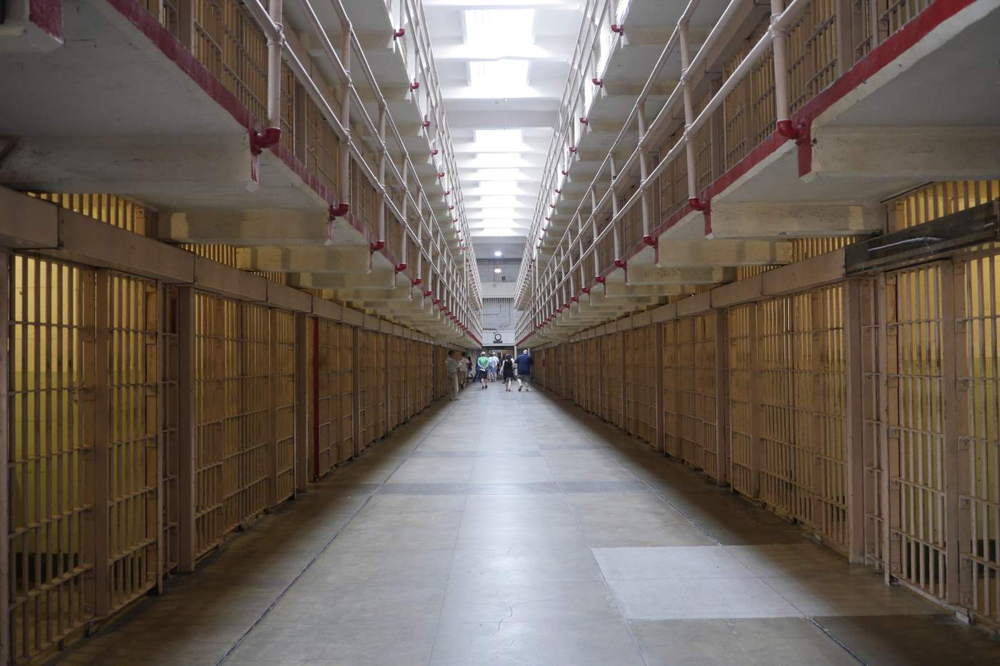
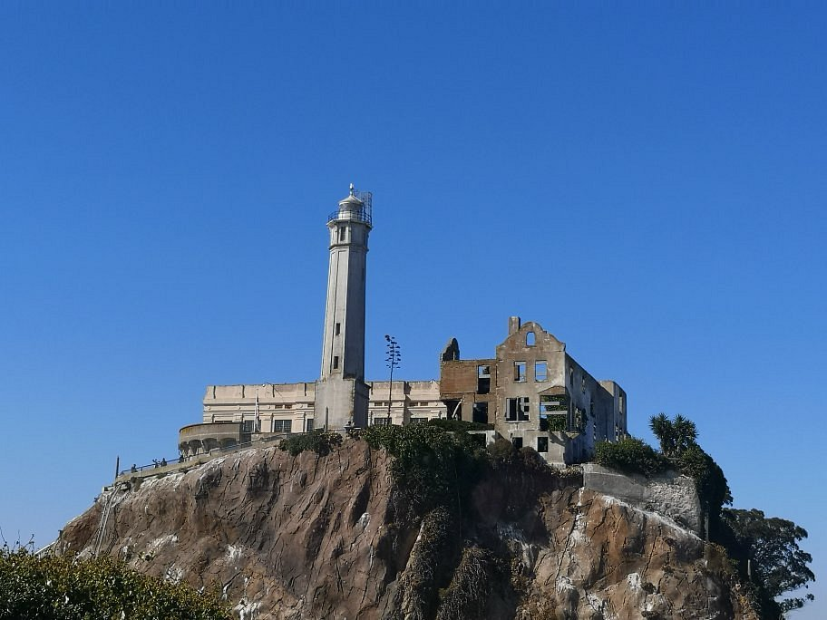

2 à 3 h de visite
15 min de ferry
Audioguide en français
Jour & nuit visites possibles
Que voir sur l'île ?

Le bâtiment des cellules
C'est le cœur de la visite. Vous pouvez marcher dans "Broadway", le couloir principal de la prison, et entrer dans les vraies cellules des prisonniers. Elles sont minuscules : environ 1,5 mètre sur 2,7 mètres.

Le phare et les jardins
Le phare d'Alcatraz est l'un des plus anciens de la côte ouest. Autour, les jardins offrent une très belle vue sur San Francisco et le Golden Gate Bridge.
Les autres endroits à ne pas manquer
- Le bloc D : les cellules d'isolement pour les prisonniers les plus difficiles
- La cantine : l'endroit où les prisonniers prenaient leurs repas
- La bibliothèque : l'un des seuls loisirs des prisonniers
- Le château d'eau : avec les inscriptions laissées pendant l'occupation amérindienne